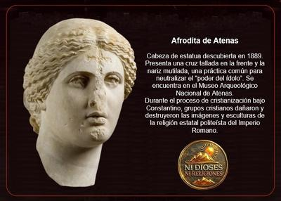

Desde una perspectiva histórica y crítica, el problema no es tanto la religiosidad privada como la conversión de las religiones en sistemas de poder institucional. Cuando una cosmovisión se presenta como verdad absoluta revelada, y además se fusiona con el Estado, la ley y la educación, se convierte en un freno estructural para el pensamiento crítico, la investigación libre y el pluralismo cultural. Sin embargo, el daño real que las religiones han causado a las civilizaciones no consiste en haber «apagado la luz del conocimiento» de forma total y permanente —eso sería una simplificación—, sino en haber ralentizado, distorsionado y condicionado su desarrollo, imponiendo límites ideológicos allí donde la razón podía avanzar con mayor autonomía.


La Antigüedad tardía ofrece un claro ejemplo. La investigación histórica actual confirma que a partir del siglo IV, con la cristianización del Imperio romano y el respaldo del poder imperial, sí existió barbarie religiosa organizada contra templos, estatuas, santuarios y centros de culto considerados «paganos». Casos bien documentados incluyen la destrucción del Serapeo de Alejandría en 392, el cierre de templos tradicionales en Grecia y Siria, la mutilación sistemática de imágenes consideradas «ídolos», y la persecución legal de filósofos que no aceptaban la ortodoxia cristiana. No se trató de un exterminio cultural total, ni de una aniquilación completa del saber antiguo, pero sí de una campaña ideológica de deslegitimación y eliminación simbólica de religiones y filosofías rivales.
Las fuentes arqueológicas muestran estatuas con rostros picados, templos paganos transformados en iglesias cristianas, bibliotecas abandonadas, y textos raspados para reutilizar el pergamino. Ciertamente no se trató de un fenómeno uniforme ni constante en todo el Imperio romano, pero ocurrió lo suficiente como para hablar de una intolerancia estructural, justificada teológicamente por la idea de que sólo un «Dios» era el verdadero, y todos los demás representaban el error o el mal. Y en ese marco mental, la destrucción de bienes culturales no era vandalismo, sino «purificación».
El cierre de la Academia de Atenas en 529 por orden de Justiniano, aunque no significó el fin de la filosofía, sí simboliza algo importante: el paso de una cultura basada en la discusión racional plural, a una cultura en que la verdad estaba teológicamente definida. La filosofía sobrevivió, pero subordinada a la teología; la ciencia continuó, pero vigilada por la ortodoxia; la educación persistió, pero con límites dogmáticos. Y este patrón se repetirá más tarde en el islam medieval ortodoxo, en el cristianismo escolástico, así como, siglos después, en los tribunales inquisitoriales.
Pero el daño civilizatorio no consistió sólo en la destrucción material, sino en algo más profundo: la sacralización de la ignorancia como virtud, la sospecha hacia la duda, y la criminalización del pensamiento divergente. La historia europea muestra largos períodos en los que la investigación natural estuvo condicionada por interpretaciones bíblicas; la medicina por tabúes teológicos; la cosmología por dogmas. No es casual entonces, que el Renacimiento y la Ilustración surgieran cuando la autoridad religiosa comenzó a perder monopolio sobre la verdad.
Ahora bien, una evaluación objetiva exige reconocer matices. No todo conocimiento antiguo se perdió por culpa de los cristianos; muchos textos sobrevivieron gracias a copistas monásticos y, de forma crucial, a traductores musulmanes. La religión no destruyó toda la cultura clásica, pero seleccionó qué debía conservarse y qué debía olvidarse, filtrándolo según su utilidad doctrinal. Y ese filtro ideológico, aplicado durante siglos, sí tuvo como efecto un desarrollo más lento y más conflictivo de la ciencia, la filosofía y la ética laica.
Pero el patrón se repite en otras épocas: cruzadas, yihad, guerras de religión, inquisiciones, persecuciones de «herejes», quema de libros, censura moral y control de la educación. Siempre el mismo mecanismo: una verdad revelada convertida en ley, una disidencia convertida en pecado, y el pecado convertido en delito.
Digamos entonces en conclusión, que el daño histórico real de las religiones no fue la destrucción total del conocimiento —eso es un mito inverso al mito piadoso—, sino algo más verificable y más grave: haber subordinado durante siglos la razón a la fe, el debate a la autoridad, la evidencia a la revelación. Ese sometimiento sí retrasó el desarrollo de una cultura verdaderamente crítica y científica. No anuló el progreso humano, pero lo hizo más lento, más doloroso y más mortífero de lo que habría sido en una civilización basada, desde mucho antes, en el libre examen y la autonomía del pensamiento.
[Godless Freeman]
Comentarios
Comments powered by Disqus